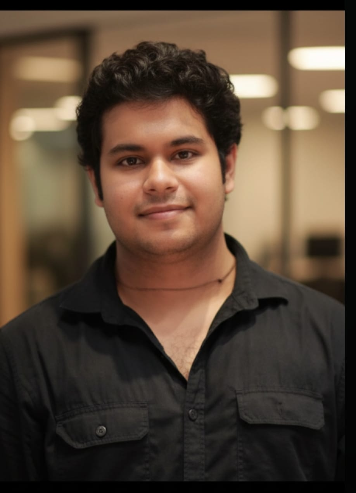

I research the security of AI systems, with a focus on LLM agents and data governance in retrieval pipelines. I build things that tend to end up in open-source ML infrastructure.
My primary research interest is the security of AI systems — specifically, what happens when language models are trusted to make authorization decisions. LLM-powered agents increasingly act as autonomous intermediaries between users and real-world systems: sending emails, invoking APIs, executing code. Because authorization and reasoning share the same inference context, adversarial inputs can simultaneously manipulate both. I study this structural gap formally and work on decoupled enforcement mechanisms that operate as independent execution boundaries, entirely outside model inference.
A second line of work concerns data governance in retrieval-augmented systems. When a data subject requests erasure under GDPR, deleting a document from a vector store is not sufficient — embeddings persist in HNSW indices, and semantically adjacent chunks leak the forgotten entity through cross-references. I built SURGE, a framework that implements hard delete, embedding-level soft suppression, and semantic neighbourhood purge, with a four-metric evaluation suite to certify that forgetting actually happened.
Before focusing on security, I worked across the AI stack: generative models (Stable Diffusion, ControlNet, text-to-image), audio intelligence (Whisper-based speech coaching), knowledge graph construction from unstructured text, and serverless AI pipelines. That breadth now informs how I think about attack surfaces — most ML systems were not designed with adversarial principals in mind.
On the applied side, I spent a summer at Hindalco Industries (Aditya Birla Group) as a manufacturing analytics intern, completing 150+ hours of process analysis and contributing to a 5% efficiency improvement on an extrusion downstream line. I was later recognised with the Role Model — "You Inspire Me" award under the ABG Bhoomika initiative. Earlier, as a Microsoft Learn Student Ambassador, I ran workshops on app development and prompt engineering for 180+ developers across campus events.
I contribute regularly to open-source ML infrastructure — across model training frameworks, retrieval libraries, and agent tooling — because I believe the security properties of these foundations matter as much as their capabilities.
validation_frequency option to fine-tuning loop
A Python framework for GDPR Article 17 compliance in RAG pipelines. Implements three unlearning strategies — hard delete, soft suppress with embedding poisoning, and semantic neighbourhood purge — with a four-metric evaluation suite and a tamper-evident audit log. Addresses the problem that deleting a document from a vector store is not the same as forgetting it.
Transcribes speech with Whisper and runs multi-dimensional coaching via Qwen — evaluating pacing, filler words, clarity, and confidence without a human reviewer.